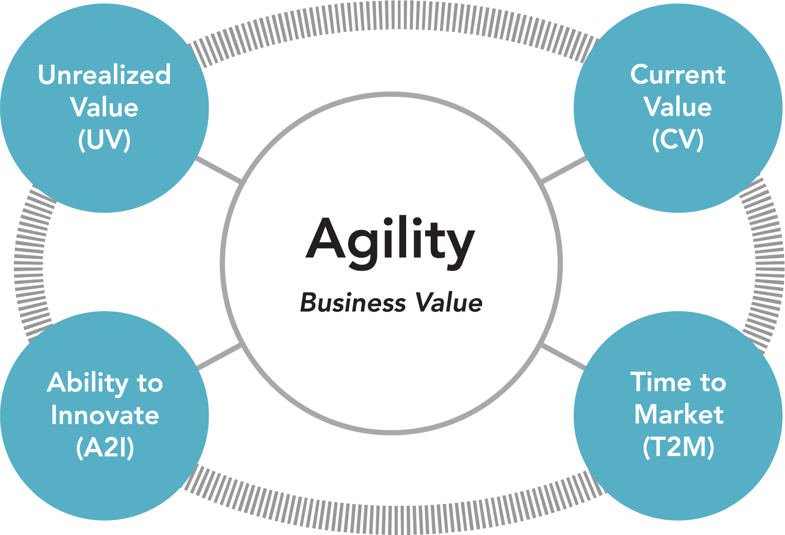

What Is
|
 John Riley
Principle Agile Coach and Trainer
|
 |
 |
### Share Your Experience
---
 @ReadySetAgile
@ReadySetAgile @ReadySetAgile
@ReadySetAgile https://www.facebook.com/ReadySetAgile/
https://www.facebook.com/ReadySetAgile/ https://www.linkedin.com/company/ready-set-agile/
https://www.linkedin.com/company/ready-set-agile/
### Got a question?
---
### Agenda
---
### Complex Environments
---
#### What Self-Organization in Agile Teams Is NOT
---
Putting a team together with no skills or experience
Letting the
team choose
its goals
team choose
its goals
Decide its members

Choose the tools
Management
resolves
team conflict
resolves
team conflict
Leadership control by being deceptive, sneaky or manipulative
Science Break: Team performace can be measured!
In a study of 64 analytic teams in the U. S. intelligence community, Research showed that 74% of the variance on a reliable performance was controlled by the presence of the five conditions:
In a study of 64 analytic teams in the U. S. intelligence community, Research showed that 74% of the variance on a reliable performance was controlled by the presence of the five conditions:
- Real team
- Compelling direction
- Enabling structure
- Supportive context
- Competent coaching
- J. Richard Hackman's Group Effectiveness model
### Complex Adaptive Systems
---
Characteristics
- Dynamic network of many agents
- Acting in parallel
- Responding to other agents
- Highly dispersed control
- Self-organizing teams evolve
- Continuous decisions being made
Bioteams - nature provides
Agile teams- leadership provides (or team members in some cases)
Self-organization does not mean that workers instead of managers engineer an organization design. (or)...letting people do whatever they want to do.
It means that management commits to guiding the evolution of behaviors that emerge from the interaction of independent agents instead of specifying in advance what effective behavior is.
- Philip Anderson, The Biology of Business
Although project teams are largely on their own, they are not uncontrolled.
Management establishes enough checkpoints to prevent instability, ambiguity, and tension from turning into chaos.
At the same time, management avoids the kind of rigid control that impairs creativity and spontaneity.
- Takeuchi & Nonaka, “The New New Product Development Game”
Science Break: The order of the conditions affecting the team is important!
Research shows that team design was four times as powerful as leader coaching in affecting a team's level of self-management, and almost 40 times as powerful in affecting team performance.
Research shows that team design was four times as powerful as leader coaching in affecting a team's level of self-management, and almost 40 times as powerful in affecting team performance.
- J. Richard Hackman's Group Effectiveness model
### Basic Team Types
---
Manager-led
Team: only authority for performing the work
Manager: decides work, direction, rules, goals, metrics, etc.
Self-Managing
Team: has authority over process
Manager: designs team context and overall direction
Self-Designing
Team: Additionally has authority over team members sometimes reporting relationships
Manager: still sets the overall direction
Self-Governing
Team: authority to alter a team’s main purpose
Manager: ?
Summary
- Self-organization is not isolated
- Self-organization is an emerging path
- Self-organizing teams continually reorganize
- Self-organizing teams respond to the environment
- Self-organizing teams evolve
- Self-organizing teams are BIOMES
:12
Exercise: Evaluate your self-organization
Science Break: Coaching matters!
Research shows that "good" coaching (such as helping a team develop a task-appropriate performance strategy) significantly helped well-designed teams exploit their favorable circumstances but made almost no difference for poorly designed teams.
“Bad” coaching, such as identifying a team's problems and telling members exactly what they should do to fix them, by contrast, significantly compromised poorly designed teams' ability to manage themselves, worsening an already difficult situation.
Research shows that "good" coaching (such as helping a team develop a task-appropriate performance strategy) significantly helped well-designed teams exploit their favorable circumstances but made almost no difference for poorly designed teams.
“Bad” coaching, such as identifying a team's problems and telling members exactly what they should do to fix them, by contrast, significantly compromised poorly designed teams' ability to manage themselves, worsening an already difficult situation.
-Wageman, R. (2001). How leaders foster self-managing team effectiveness:
Design choices versus hands-on coaching.
Design choices versus hands-on coaching.
### Influencing Team Evolution
---
Self-organization proceeds from the premise that effective organization is evolved, not designed.
It aims to create an environment in which successful divisions of labor and routines not only emerge but also self-adjust in response to environmental changes.
This happens because management sets up an environment and encourages rapid evolution toward higher fitness, not because management has mastered the art of planning and monitoring workflows.
- “Seven Levers for Guiding the Evolving Enterprise,”
John Henry Clippinger III.
John Henry Clippinger III.
Science Break: Where did optimal team size come from?
Team size relates to the direct and indirect communication channels that exist on a team.
The formula for the number of communication channels is [N x (N-1)] / 2 , where N is a node,
agent, or team member.
"if companies are dealing with coordination tasks and motivational issues, and you ask, ‘What is your team size and what is optimal?’ that correlates to a team of six. Above and beyond five, and you begin to see diminishing motivation. After the fifth person, you look for cliques. And the number of people who speak at any one time? That’s harder to manage in a group of five or more.”
"if companies are dealing with coordination tasks and motivational issues, and you ask, ‘What is your team size and what is optimal?’ that correlates to a team of six. Above and beyond five, and you begin to see diminishing motivation. After the fifth person, you look for cliques. And the number of people who speak at any one time? That’s harder to manage in a group of five or more.”
- Jennifer Mueller, Is Your Team Too Big? Too Small? What’s the Right Number?
### Evidence Based Management
---

### Services at www.ReadySetAgile.com
---

### Thank you!
---

john@ReadySetAgile.com - John Riley
@ReadySetAgile @ReadySetAgile https://www.facebook.com/ReadySetAgile/ https://www.linkedin.com/company/ready-set-agile/